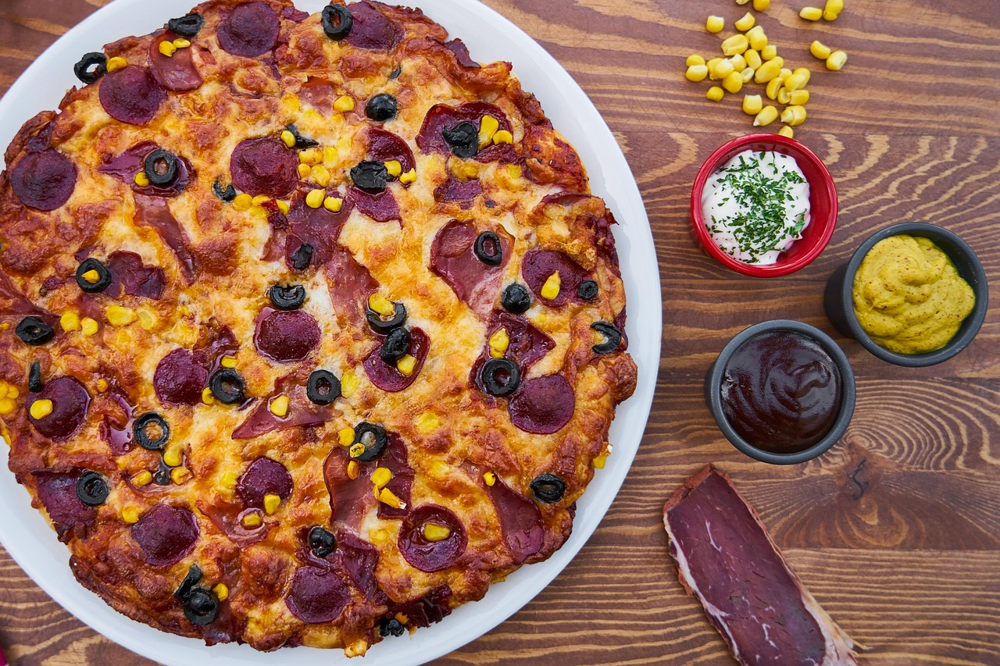

Description
This recipe shows how to make a beutiful, greasy, warm, American-style pizza. This pizza has lots of sauce, a thick blanket of melty cheese, and is topped by pepperoni, chopped bell peppers, and a sprinkling of Italian seasoning. Serve while hot
Ingredients
- Pita flatbread
- Shredded mozerella cheese
- Tomato sauce
- Bell pepper
- Pepperoni
- Italian Seasoning
Steps
- Preaheat oven to 350°
- Spray pan with non-stick spray, and line with baking sheets
- Put your pita on the pan, and use a spoon to spread tomato sauce on thickly
- Take the mozerella cheese and sprinkle on till the sauce is completely covered, and can't be seen underneath the cheese
- Put pepperoni on top, and sprinkle with Italian seasoning
- Dice bell pepper into square pieces, and sprinkle on top of pizza
- Put in oven and bake for 15-20 minutes, until cheese melted. You can keep it in longer to brown more if you desire.
- Take it out and enjoy your warm, homemade pizza deliciousness!